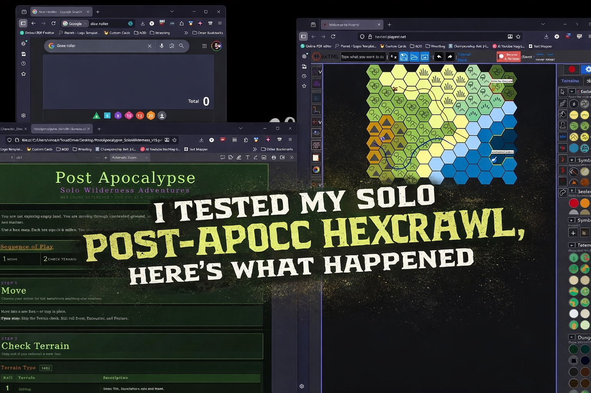

I tested a solo post-apocalyptic hexcrawl with a mutant ninja wolverine, and it actually worked
March 18th, 2026

Been working on a Solo Post Apocalyptic wilderness HexCrawl procedures, and I am finally putting it to play today in this little test.
I am using TMNT and the character is Vark, a mutant wolverine trained by a ninja mentor, and the session focused on moving through hexes, checking terrain, events, encounters, and features while trying to make the map feel alive and worth exploring. I also used a custom procedure for tracking control, discoveries, and whatever trouble showed up that day.
I think it made the pretend world feel a little alive, and maybe I could tighten it up a bit, but I'd love to see some feedback or suggestions.
Here’s the video:
https://youtu.be/WGMQ1DR3ysY